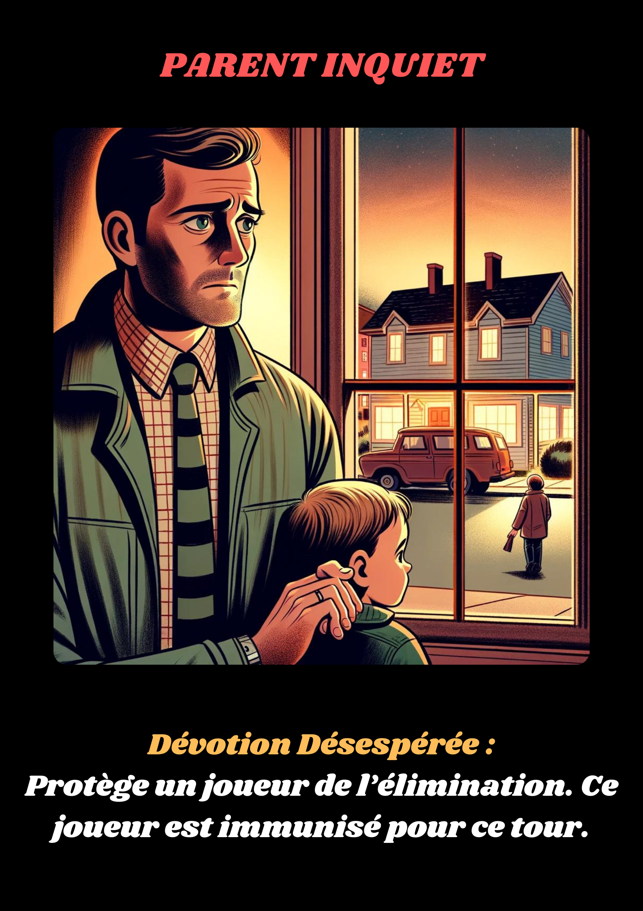

Le Parent Inquiet est venu à la fête pour veiller sur son enfant, qui fait partie des invités. Depuis la disparition d'Emmanuel, son instinct protecteur s’est renforcé. Il est prêt à tout pour protéger sa famille. Son pouvoir lui permet de protéger un autre joueur de l’élimination, redoutant que le coupable ne s’en prenne à ses proches.
